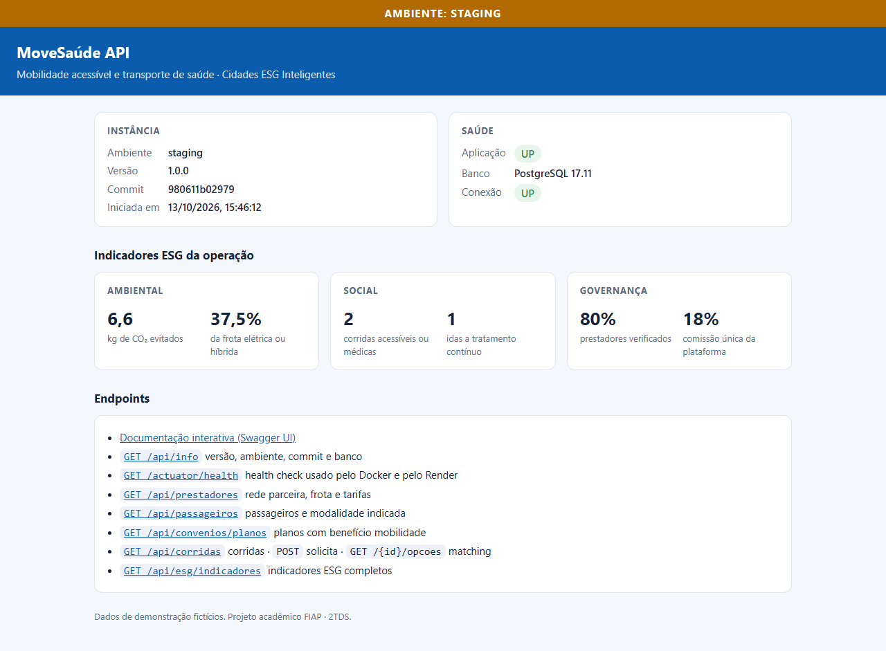
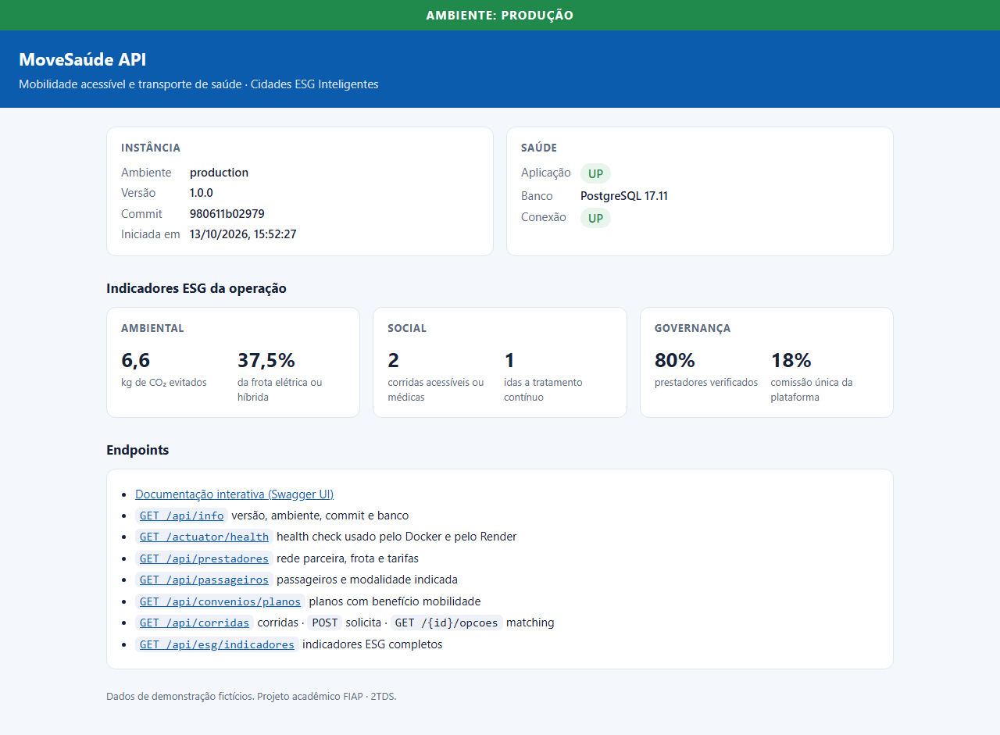
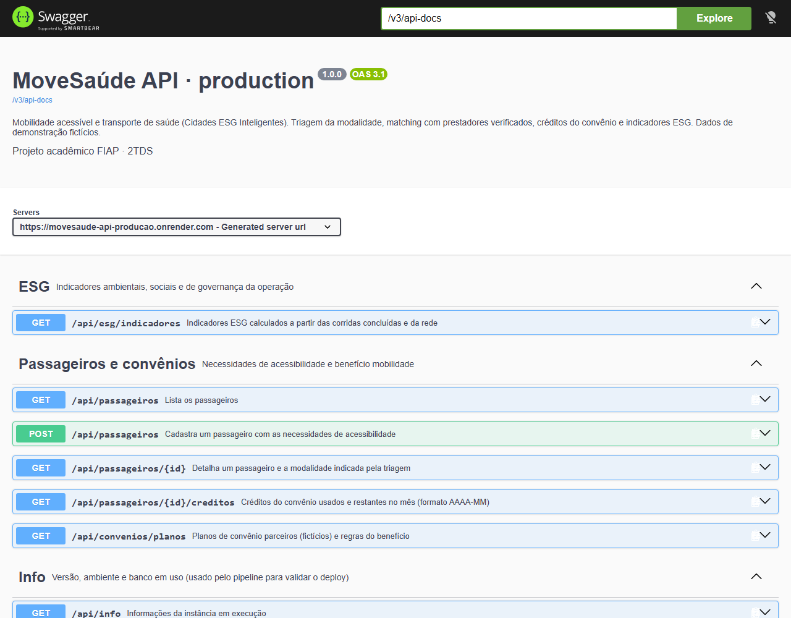
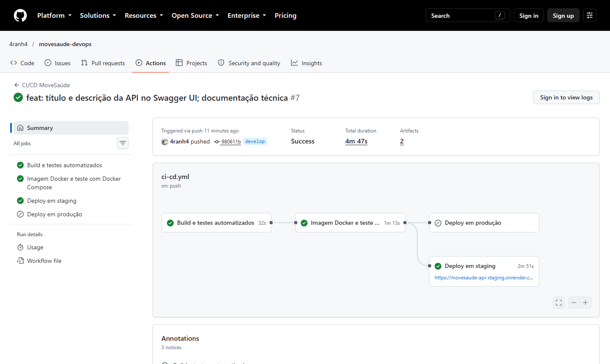
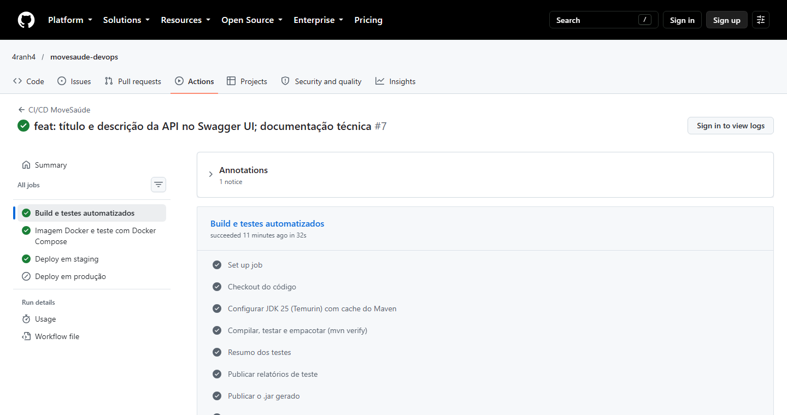
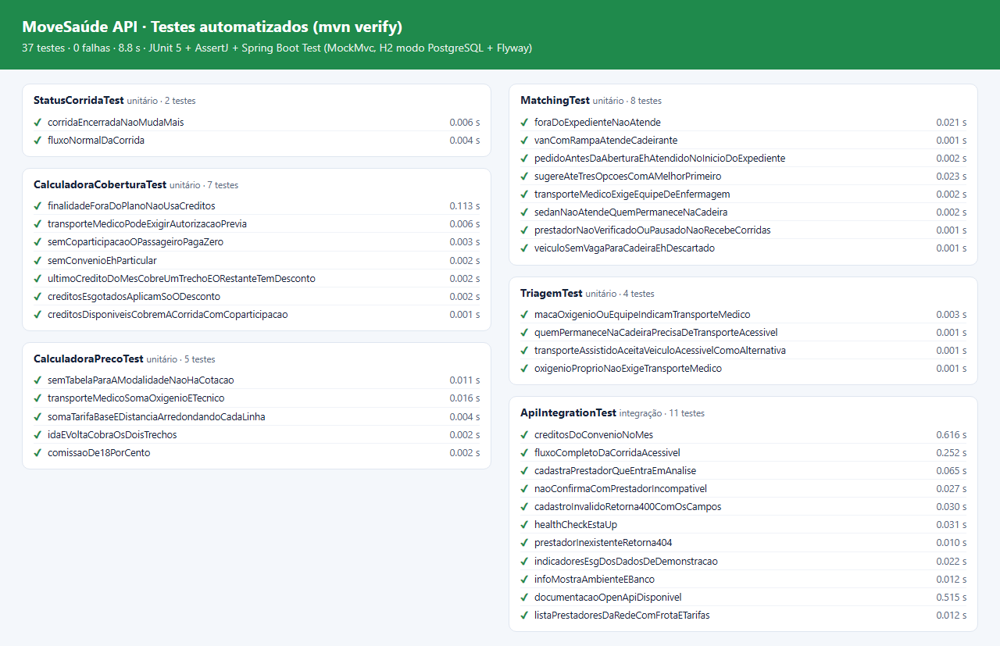
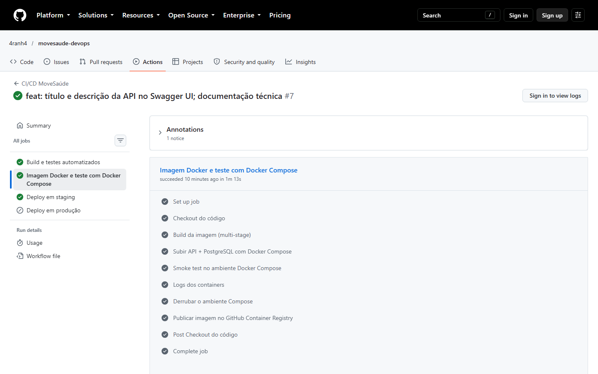
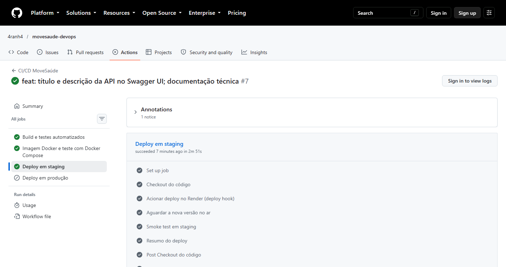
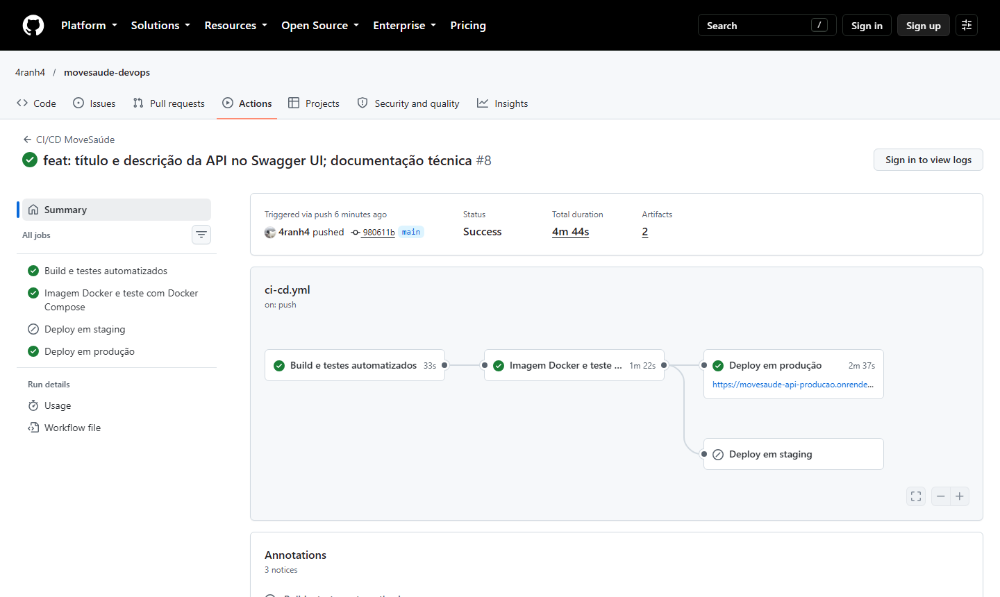
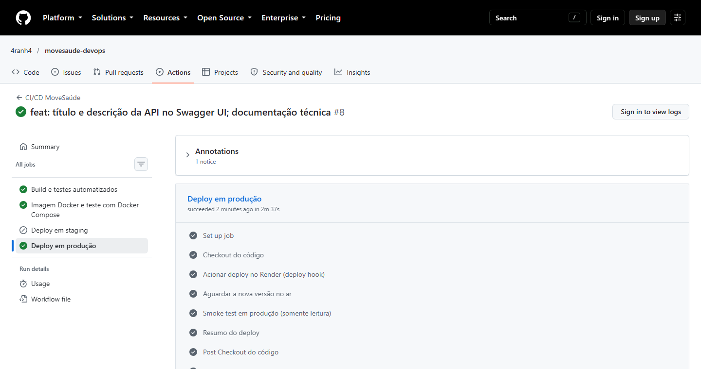

5. Ambientes staging e produção funcionando




| Integrante | RM |
|---|---|
| João Pedro Aranha Moscatello | 565854 |
| Lucas Vilarim de Souza | 565685 |
A MoveSaúde conecta pessoas com deficiência, idosos e pacientes em tratamento contínuo a uma rede de prestadores verificados de transporte acessível, assistido e de remoção não emergencial. A API, em Java 25 com Spring Boot 4.1 e PostgreSQL, faz a triagem da modalidade pelas necessidades do passageiro, o matching com até três opções compatíveis, a cotação por trecho e a aplicação dos créditos mensais do convênio.
O tema Cidades ESG Inteligentes aparece nos indicadores que a própria API calcula em GET /api/esg/indicadores:
| Pilar | Indicadores |
|---|---|
| Ambiental | km rodados, CO₂ emitido e evitado pela frota elétrica ou híbrida, % da frota limpa |
| Social | corridas acessíveis ou médicas, idas a tratamentos contínuos (hemodiálise, oncologia, terapia), passageiros atendidos, valor subsidiado pelos convênios |
| Governança | % de prestadores verificados (só eles recebem corridas), comissão única e preço detalhado linha a linha |
| Ambiente | Execução | Banco | Origem |
|---|---|---|---|
| Local | Docker Compose: API + PostgreSQL 17 | container db, volume movesaude-pgdata | qualquer branch |
| Staging | Render, container Docker (plano free) | Supabase PostgreSQL 17, schema e usuário movesaude_staging | branch develop |
| Produção | Render, container Docker (plano free) | Supabase PostgreSQL 17, schema e usuário movesaude_producao | branch main |
Staging e produção ficam no mesmo projeto Supabase, mas isolados: cada ambiente tem o próprio usuário de banco, dono apenas do próprio schema e sem permissão no schema do outro.
Ferramenta: GitHub Actions (.github/workflows/ci-cd.yml), com GitHub Environments (staging e production) e GitHub Container Registry. Destino do deploy: Render, com os dois serviços descritos como código no Blueprint render.yaml.
mvn verify: compila, roda os 37 testes e gera o .jardevelop: deploy hook, espera o commit no ar e roda smoke test com escritamain: aprovação do environment, deploy hook, espera o commit e smoke test somente leitura| Job | Gatilho | O que faz |
|---|---|---|
| Build e testes automatizados | todo push e PR em develop/main | actions/setup-java (Temurin 25) com cache do Maven; ./mvnw -B verify; publica relatórios de teste e o .jar como artefatos; escreve a tabela de testes no resumo da execução. |
| Imagem Docker e teste com Docker Compose | após o job 1 | docker build --build-arg GIT_SHA=…; docker compose up com API + PostgreSQL; espera o health check healthy; roda scripts/smoke-test.sh com um fluxo completo de corrida; em pushes, publica no GHCR com as tags sha-<commit>, <branch> e staging/production. |
| Deploy em staging | push em develop | Aciona o deploy hook do serviço de staging (secret RENDER_DEPLOY_HOOK_STAGING); scripts/wait-for-deploy.sh espera /api/info responder com o commit testado; smoke test em staging, criando e confirmando uma corrida. |
| Deploy em produção | push em main | Environment production com revisão obrigatória; deploy hook de produção; espera o commit no ar; smoke test somente leitura. |
develop e vai automaticamente para staging. Validado, um pull request develop → main leva a mesma versão para produção.autoDeployTrigger: off), e só o pipeline dispara o deploy./actuator/healthdb, porta não exposta, pg_isreadyA API só sobe depois que o banco responde (depends_on: condition: service_healthy). As variáveis vêm do .env, cujo modelo é o .env.example. O Flyway cria o schema e as tabelas e carrega os dados de demonstração na primeira inicialização.
| Item | Valor |
|---|---|
| Nome | ghcr.io/4ranh4/movesaude-api |
| Tags | sha-<commit>, develop, main, staging, production |
| Base de build / runtime | eclipse-temurin:25-jdk → eclipse-temurin:25-jre |
| Tamanho | 173 MB compactada no registry (9 camadas); o .jar tem 55 MB |
| Usuário | movesaude, sem privilégios de root |
| Health check | curl /actuator/health/liveness a cada 15 s |
pom.xml e as dependências vêm antes do código, então uma mudança no código não baixa as dependências de novo.APP_ENV, DB_URL, DB_USER, DB_PASSWORD, DB_SCHEMA e PORT.GIT_SHA entra na imagem e aparece em /api/info.MaxRAMPercentage=60, SerialGC e TieredStopAtLevel=1, para caber nos 512 MB do plano gratuito.cp .env.example .env docker compose up -d --build # constrói a imagem e sobe API + PostgreSQL docker compose ps # estado e health dos serviços docker compose logs -f api # logs da API ./scripts/smoke-test.sh http://localhost:8080 local --fluxo docker compose down -v # derruba e apaga o volume # no pipeline docker build --build-arg GIT_SHA=$GITHUB_SHA -t movesaude-api:ci . IMAGE_TAG=ci docker compose up -d --no-build docker tag movesaude-api:ci ghcr.io/4ranh4/movesaude-api:sha-<commit> docker push ghcr.io/4ranh4/movesaude-api:sha-<commit>
Execuções: https://github.com/4ranh4/movesaude-devops/actions

develop: build e testes → imagem Docker com Compose → deploy em staging.
mvn verify (compila, testa e empacota), relatórios e .jar publicados como artefatos.
mvn verify: 37 testes, 0 falhas (26 unitários e 11 de integração).


main: mesma esteira, com deploy no ambiente de produção.



| Desafio | Solução |
|---|---|
| O protótipo do MoveSaúde era só front-end (React), e a atividade pede Java Spring ou C#. | Criamos a API em Spring Boot 4.1 e levamos para Java as regras do protótipo (triagem, cotação, matching e créditos do convênio), cobertas por 37 testes. |
| O plano gratuito do Supabase permite só 2 projetos ativos, e um já estava em uso. | Staging e produção ficaram no mesmo projeto, isolados por schema e usuário de banco: cada usuário é dono só do próprio schema. |
| A conexão direta do Supabase é só IPv6, e o Render e o GitHub Actions usam IPv4. | Conexão pelo pooler Supavisor em modo sessão (compatível com prepared statements do JDBC). Testando, descobrimos que o host certo do projeto é aws-0-us-east-1; o aws-1 respondia "tenant not found". |
| Criar as senhas do banco sem expor o texto puro. | As senhas foram geradas localmente, e só o hash SCRAM-SHA-256 foi enviado ao Supabase. O texto puro fica apenas nas variáveis secretas do Render. |
| O Jackson 3, padrão do Spring Boot 4, recusava JSON sem campos booleanos opcionais (erro 400). | Um teste de integração pegou o erro. Configuramos spring.jackson.deserialization.fail-on-null-for-primitives=false. |
| O deploy hook do Render é assíncrono: ele aceita o pedido antes de a versão nova estar no ar. | O wait-for-deploy.sh compara o commit de /api/info com o SHA do pipeline. Só depois disso roda o smoke test. |
| O smoke test quebrou porque o JSON do Actuator vem em ordem alfabética. | O script passou a consultar endpoints específicos (/actuator/health/db e /readiness), em vez de depender da ordem dos campos. |
| O plano gratuito do Render tem 512 MB de RAM e hiberna o serviço sem uso. | JVM ajustada para containers, timeouts generosos e novas tentativas (retries) nos scripts. A primeira requisição depois da hibernação acorda o serviço. |
| Testar sem depender de Docker na máquina de desenvolvimento. | Os testes usam H2 no modo PostgreSQL com as mesmas migrations. O PostgreSQL real é validado no job do Docker Compose e no Supabase. |
| Item | OK |
|---|---|
| Projeto compactado em .ZIP com estrutura organizada | ☑ OK |
| Dockerfile funcional | ☑ OK |
| docker-compose.yml ou arquivos Kubernetes | ☑ OK |
| Pipeline com etapas de build, teste e deploy | ☑ OK |
| README.md com instruções e prints | ☑ OK |
| Documentação técnica com evidências (PDF ou PPT) | ☑ OK |
| Deploy realizado nos ambientes staging e produção | ☑ OK |